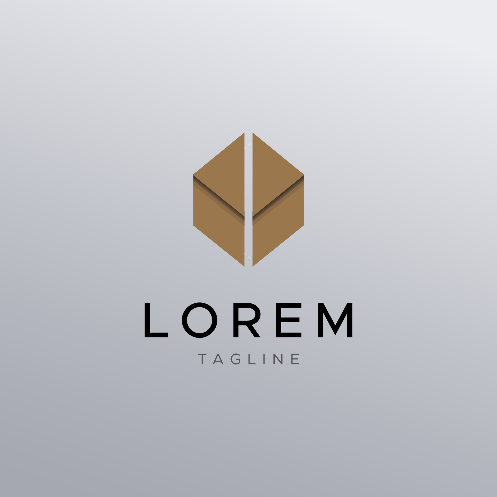

|  |
The Sidemen is a British collective consisting of YouTubers, influencers and internet personalities KSI, Miniminter, Zerkaa, TBJZL, Behzinga, Vikkstar123, and W2S. The group produce videos of various challenges, sketches, and video game commentaries across their YouTube channels, which have a combined total of over 155 million subscribers as of May 2025. Beyond their YouTube content, the Sidemen have expanded into various business ventures. They launched Sidemen Clothing in 2014, followed by the restaurant chain Sides and the subscription service app Side+ in 2021, their own alcoholic beverage line XIX Vodka in 2022, and their cereal brand Best Cereal in 2024. The group has also further extended their influence into web series and documentary filmmaking. In 2018, they starred in The Sidemen Show, a YouTube Premium series featuring celebrity guests and global challenges. In 2024, the Netflix documentary The Sidemen Story was released, detailing their decade-long journey and the impact they have had on internet culture. Later that year, they created their own reality game show, Inside. The Sidemen have also been actively involved in philanthropy, organizing Sidemen charity football matches since 2016, which have collectively raised over £8.5 million for charitable organizations in the United Kingdom.